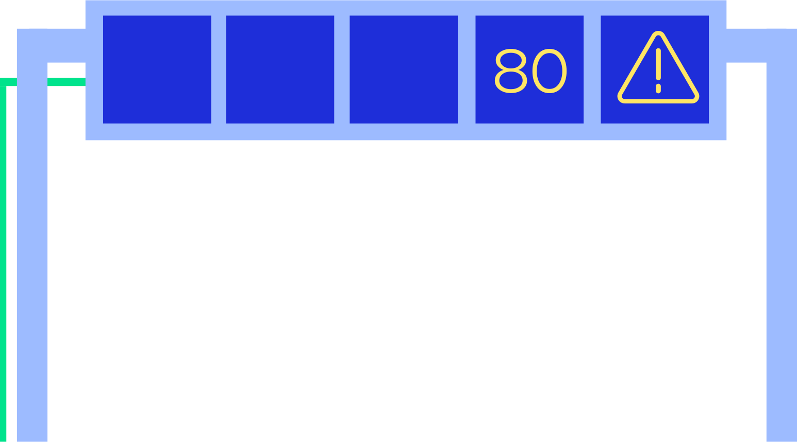
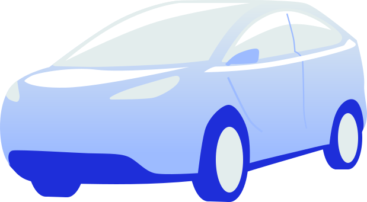

Streamline Black & White — UI / line
~370 PNG icons in assets/icons/bw/ — Streamline set, 140×140, monochrome line.
RGB illustration set — gradient / color
85+ numbered SVG icons in assets/icons/colour/ — Royal Blue / Lavender / Pistachio gradient family.
Digital scene — illustrative


Scene-building SVGs in assets/icons/digital/ — for diagrams of intersections, C-ITS, detection.